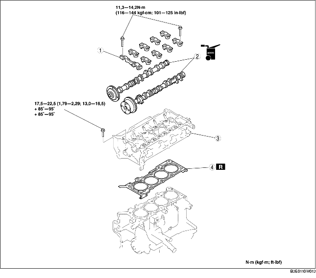

SUSTITUCION JUNTA CULATA (ZJ, Z6)
B3E011010271W01
-
Atención
-
• El vapor del combustible es peligroso. Puede incendiarse y causar heridas y daños. Tener siempre chispas y llamas alejadas del combustible.
-
• Las pérdidas de combustible son peligrosas. El combustible puede incendiarse y causar heridas muy graves o incluso fatales y daños. El combustible también puede irritar la piel y los ojos. Para evitar esto, completar siempre los "Procedimientos de seguridad de la línea del combustible". [Véase PROCEDIMIENTOS PRE-REPARACION (ZJ, Z6, LF)].
1. Quitar los siguientes componentes:
-
(1) Cadena de la distribución [Véase REMOCION/INSTALACION CADENA DE LA DISTRIBUCION (ZJ, Z6)].
-
(2) Tubo EGR y soporte válvula EGR [Véase REMOCION/INSTALACION SISTEMA DE ADMISION (ZJ, Z6)]. [Véase REMOCION/INSTALACION DEL SISTEMA DE ESCAPE (ZJ, Z6)]. [Véase REMOCION/INSTALACION VALVULA EGR (ZJ, Z6)].
-
(3) Sonda HO2S delantera [Véase REMOCION/INSTALACION DEL SISTEMA DE ESCAPE (ZJ, Z6)].
-
(4) Cable del acelerador y soporte
-
(5) Tubo flexible de alimentación y cableado del inyector de combustible [Véase REMOCION/INSTALACION CONECTOR DE ENGANCHE RAPIDO (ZJ, Z6, LF)]. [Véase REMOCION/INSTALACION INYECTOR DE COMBUSTIBLE (ZJ, Z6)].
-
(6) Tubo flexible de aire, cuerpo de la mariposa y colector de admisión [Véase REMOCION/INSTALACION SISTEMA DE ADMISION (ZJ, Z6)].
2. Desconectar los siguientes componentes:
-
(1) Conector sonda HO2S trasera
-
(2) Silenciador principal [Véase REMOCION/INSTALACION DEL SISTEMA DE ESCAPE (ZJ, Z6)].
-
(3) WU-TWC [Véase REMOCION/INSTALACION DEL SISTEMA DE ESCAPE (ZJ, Z6)].
-
(4) Tubo flexible superior del radiador
-
(5) Tubo flexible de calefacción
3. Quitar según el orden indicado en la tabla.
4. Instalar en el orden contrario al de la remoción.
5. Controlar la compresión. [Véase CONTROL DE LA COMPRESION (ZJ, Z6)].

|
1
|
Tapa del eje de excéntricas
|
|
2
|
Eje de excéntricas
|
|
3
|
Culata
|
|
4
|
Junta de la culata
|
Detalles de remoción tapas del eje de excéntricas
1. Aflojar los pernos de las tapas del eje de excéntricas en 2-3 pasos según el orden que se muestra en la figura.
2. Quitar las tapas del eje de excéntricas.
Detalles de remoción culata
1. Aflojar los pernos de fijación de la culata en 2-3 pasos según el orden que se muestra en la figura, y quitarlos.
Detalles de instalación culata
1. Medir la longitud de cada perno de fijación de la culata.
-
• Si excede el valor especificado, sustituir el perno de fijación de la culata.
-
Estándar
-
L: 128,9-129,5 mm (5,075-5,098 in)
-
Máximo
-
L: 130,2 mm (5,125 in)
2. Apretar los pernos de fijación de la culata en tres pasos, según el orden que se muestra en la figura.
-
1. Par de torsión: 17,5-22,5 N·m (1,79-13,0 kgf·m; 83-16,5 ft·lbf)
-
2. Angulo de torsión: 85°-95°
-
3. Angulo de torsión: 85°-95°
Detalles de instalación tapas del eje de excéntricas
1. Alinear la posición del eje de excéntricas con la posición PMS del cilindro N.1 e instalar el eje de excéntricas.
2. Instalar las tapas del eje de excéntricas en las posiciones que se muestran en la figura, y apretar temporalmente los pernos de fijación de las tapas N.2 y N.7 del eje de excéntricas.
3. Apretar los pernos de fijación de las tapas del eje de excéntricas en 2-3 pasos según el orden que se muestra en la figura.
-
Par de torsión
-
11,3-14,2 N·m (116-144 kgf·cm; 101-125 in·lbf)